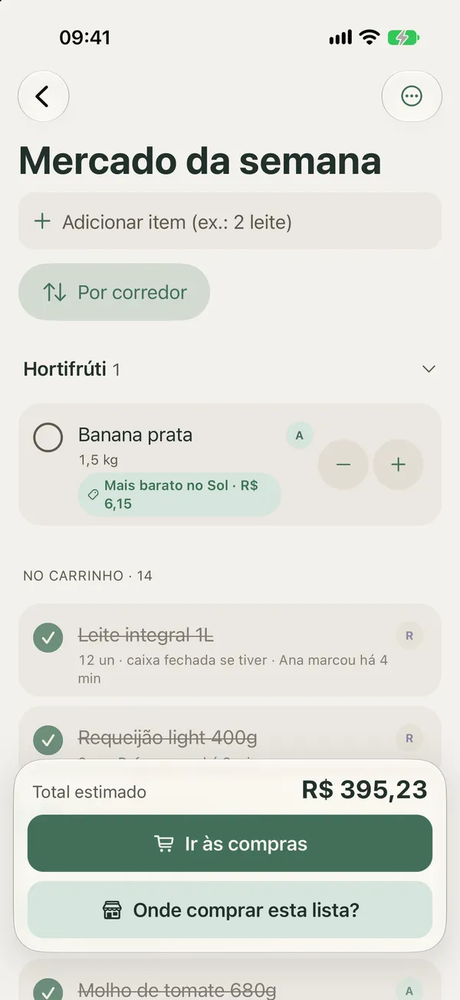
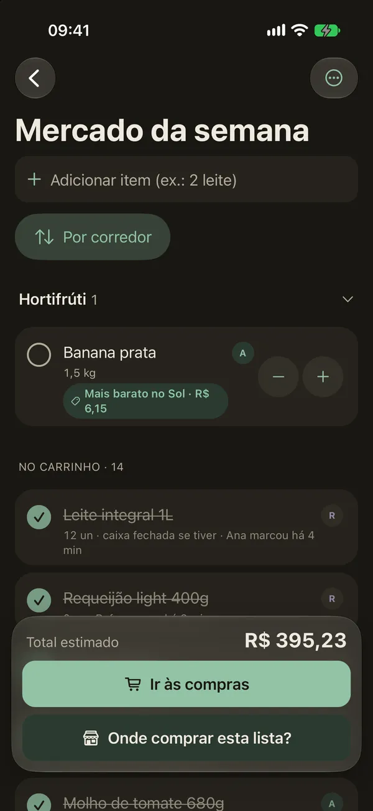
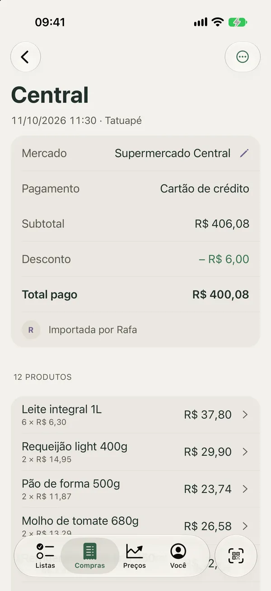
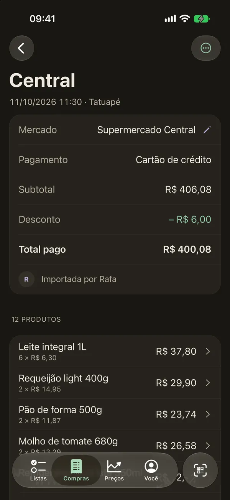
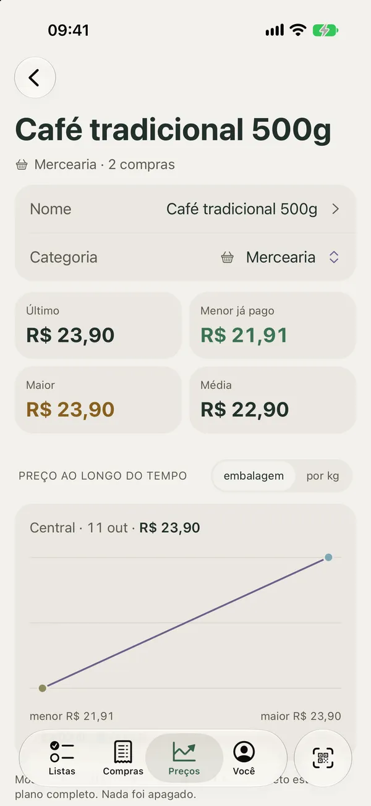
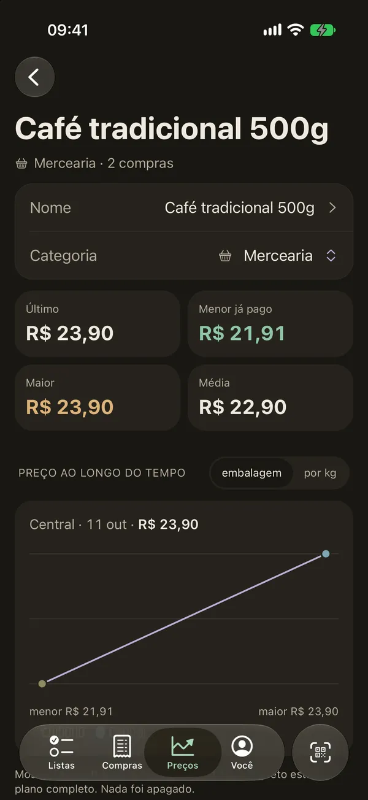

Compre melhor. Escaneie a nota, a Despensa guarda os preços.
Lista de compras da casa que lê a nota fiscal.
Lê notas do PR · PE · RJ · RS · SP


Como funciona
Do caixa para a lista, em três passos.
-
01
A lista da casa
Todo mundo que mora junto vê a mesma lista. Quem passa no mercado marca o que já pegou, e o resto da casa vê na hora.
-
02
Leia a nota fiscal
No caixa, aponte a câmera para o QR da nota (NFC-e). A Despensa lê os itens e os preços e preenche a compra. Você só confere.


-
03
Veja os preços
Cada nota alimenta o histórico. Você vê se o arroz subiu e em qual mercado cada item sai mais barato.


Privacidade
Nunca guardamos o CPF.
Ele aparece na nota, é descartado na leitura e não fica no seu iPhone, na nuvem nem em registros técnicos.
- Sem anúncios
- Sem rastreionem neste site
- Funciona sem internet
- Apague tudo quando quiser
A tarja é de verdade: o dado some na leitura.
As demais seções (recursos, planos, perguntas, rodapé) seguem o mesmo sistema. Veja proposta.md.